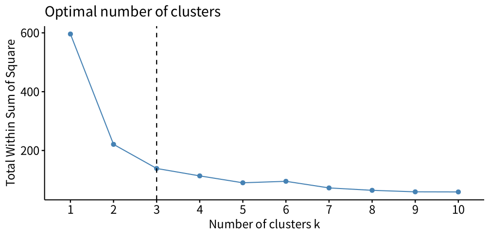
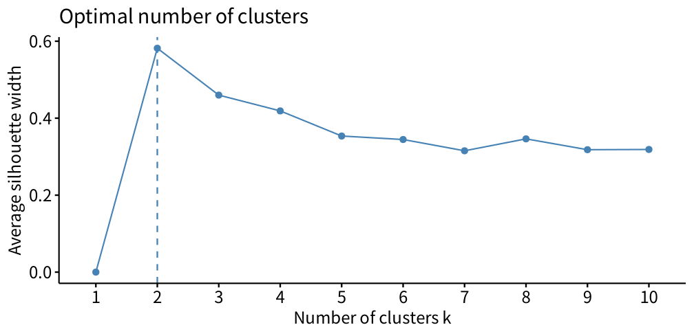
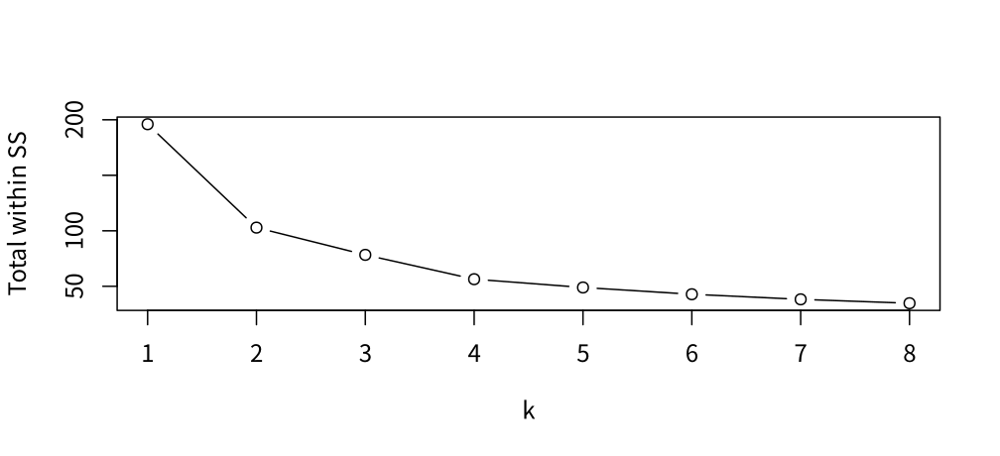
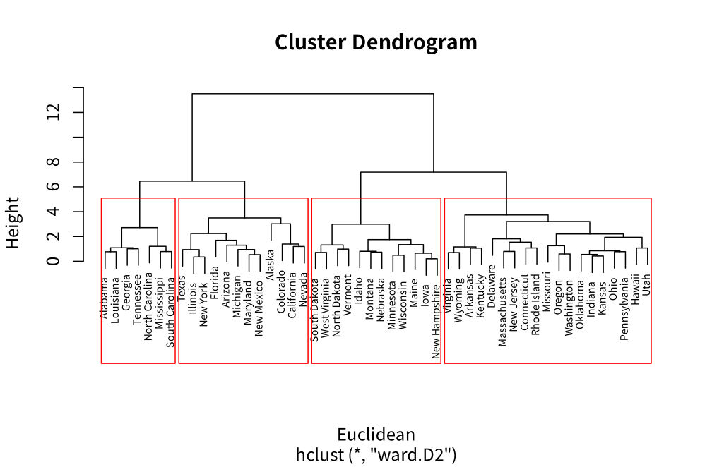
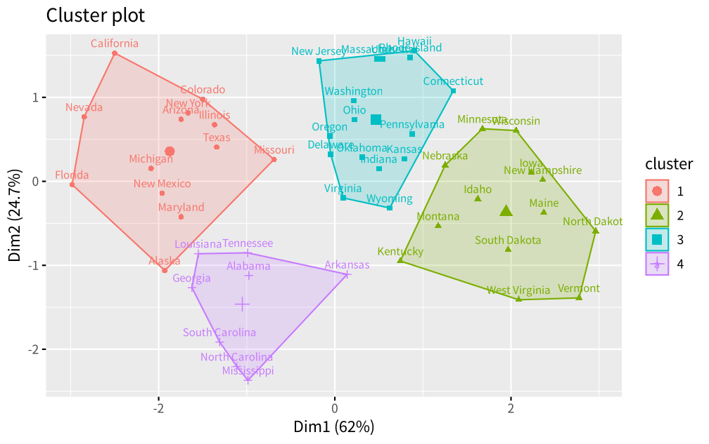
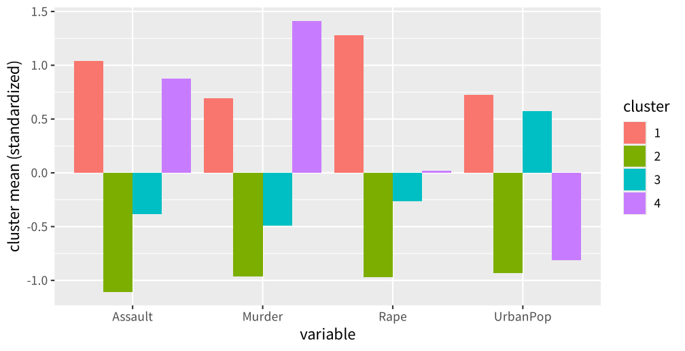

首頁 › 課程筆記 › 第 9 章 前面幾章的迴歸 、邏輯斯迴歸 ，都是「有答案」的問題：資料裡有一個要預測的 Y。這一章開始進入機器學習 ，先學非監督式學習 集群分析 （clustering）：資料沒有 Y，我們想知道「哪些個體彼此相似、可以分成一群」，例如把顧客分成幾種客群，針對每一群設計不同的行銷方案。
複製 R library ( tidyverse )
library ( factoextra ) # fviz_nbclust()、fviz_cluster()：選群數與畫分群圖
9.1 機器學習：監督式與非監督式機器學習 是用演算法從資料中學習規則，再拿來預測或判斷。老師把它分成四類：監督式、非監督式、半監督式、增強學習，課程只講前兩種。
監督式學習 非監督式學習
資料
有標籤（label）：每筆資料都有答案 Y
沒有標籤，只有特徵 X
目的
學習 X → Y 的規則，預測新資料的 Y
找出資料本身的結構（分群、降維）
例子
預測是否核卡、是否取消訂房、房價
顧客分群、市場區隔、PCA
評估
有答案可對照：正確率 、MSE、AUC
沒有標準答案，要靠解釋與商業意義
本課
第 6～8 章、第 10 章
第 9 章
機器學習把變數叫做特徵 （feature）或屬性（attribute），統計上就是變數；把要預測的 Y 叫做標籤 。
集群分析的目標是：群內相似度高、群間差異大 。一般流程分三步：
計算個體之間的距離 （或相似度）。
選擇分群方法（K-means 、階層式分群 …）與群數 。
描述各群的特徵 （對每一群做 EDA），把數學上的群翻譯成商業上看得懂的客群。 Concept Check：9.1 機器學習：監督式與非監督式 題目照期末考的題型自編（選擇、填空、簡答、寫程式），不是老師出的題目。選擇與填空用英文題幹，附中文題意。
Compare and contrast supervised learning and unsupervised learning. Provide examples of each.
顯示解答 答案 Supervised learning uses labeled data (each observation has a known outcome Y) and learns a rule from the features X to Y in order to predict new cases; it can be evaluated with test data (accuracy, MSE, AUC). Examples: logistic regression or a decision tree to predict whether a hotel booking will be canceled; linear regression to predict sales. Unsupervised learning uses unlabeled data and looks for structure in X itself, such as groups of similar observations; there is no correct answer to compare with, so results are judged by interpretability and business meaning. Examples: k-means or hierarchical clustering for customer segmentation; PCA for dimension reduction. Both learn patterns from data and usually require preprocessing such as standardization.
解析
考古題原題（第 8 章 8.5 也有中文重點）。
A hotel wants to group its bookings into segments based on lead time, length of stay and room price, without using whether the booking was canceled. Which method fits this task?
(A) Logistic regression on the cancellation flag (B) A decision tree that predicts the booking cancellation flag (C) K-means clustering on the scaled booking variables (D) Linear regression of room price on lead time 顯示解答 中文題意
飯店想依訂房的提前天數、住宿晚數、房價把訂房分群，不使用是否取消，該用哪種方法？
答案 (C) K-means clustering on the scaled booking variables
解析
沒有要預測的 Y，只是要找出相似的群體，屬於非監督式學習的集群分析。(A)(B)(D) 都是監督式方法，需要一個反應變數。
In machine learning, the input variables are called _ _
顯示解答 中文題意
機器學習中，輸入的變數叫什麼？監督式學習中要預測的已知結果叫什麼？
答案 features（特徵，或 attributes）；label（標籤）
Why is it harder to evaluate a clustering result than a classification model?
(A) Clustering algorithms cannot be run on more than two variables (B) There is no true label to compare the clusters against (C) Clustering always produces exactly two groups of equal size (D) Clustering results cannot be plotted on a scatter plot 顯示解答 答案 (B) There is no true label to compare the clusters against
解析
分類有正確答案 Y，可以算正確率；分群沒有標籤，只能用群內緊密、群間分離的指標（例如輪廓係數）與「各群在商業上是否說得通」來判斷。
9.2 距離與標準化歐氏距離
分群的依據是「誰和誰比較近」。最常用的是歐氏距離 （Euclidean distance）：兩點各個特徵差的平方和再開根號，就是平面上兩點直線距離的推廣。
\[d(x, y)=\sqrt{\sum_{j}(x_j-y_j)^2}\]
其他常用的距離：曼哈頓距離（各特徵差的絕對值相加）、漢明距離（類別不同的個數）、餘弦相似度、相關係數 。距離和相似度方向相反：距離 = 1 − 相似度 。
R 的 dist() 計算所有個體兩兩之間的距離：
複製 ▶ 執行 R customers <- data.frame ( age = c ( 25 , 27 , 52 , 49 ),
income = c ( 30000 , 32000 , 31000 , 90000 ))
dist ( customers )
## 1 2 3
## 2 2000
## 3 1000 1000
## 4 60000 58000 59000輸出是一個三角形的距離表：第 1、2 位顧客的距離約 2000，第 1、3 位也約 1000……幾乎完全由收入決定。年齡差了 27 歲，對距離的影響卻微不足道——因為收入的單位（元）比年齡（歲）大太多了。
為什麼要標準化
變數單位不同時，數值大的變數會主導 距離，分群結果幾乎只看那一個變數。解決方法是先標準化 ，讓每個變數的尺度一樣：
複製 R customers_z <- scale ( customers ) # 每欄減平均、除以標準差（第 5 章 z-score）
round ( customers_z , 2 )
## age income
## [1,] -0.93 -0.53
## [2,] -0.79 -0.47
## [3,] 0.97 -0.50
## [4,] 0.76 1.50
## attr(,"scaled:center")
## age income
## 38.25 45750.00
## attr(,"scaled:scale")
## age income
## 14.22 29511.30複製 R round ( dist ( customers_z ), 2 )
## 1 2 3
## 2 0.16
## 3 1.90 1.76
## 4 2.64 2.50 2.01標準化之後，年齡和收入對距離的貢獻相當：第 1、2 位（年輕、低收入）最接近；第 3 位（年長、低收入）和第 4 位（年長、高收入）各有特色。
scale()：z 分數標準化，每個變數平均 0、標準差 1（第 5 章 5.5）。也可以用最小–最大縮放 \(\frac{x-\min}{\max-\min}\) 到 0～1（第 3 章的 scalefnc()）。
類別變數 要先轉成 1／0 的虛擬變數 才能算距離。
重點 分群前一定要標準化 只要變數的單位不同（金額、天數、人數），就要先 scale()。這是老師在課堂實作中特別強調的步驟。
Concept Check：9.2 距離與標準化 題目照期末考的題型自編（選擇、填空、簡答、寫程式），不是老師出的題目。選擇與填空用英文題幹，附中文題意。
You cluster customers using age (in years) and annual_spending (in dollars) without standardizing. What is the most likely problem?
(A) K-means cannot run on variables with different units (B) The clusters will be determined almost only by annual_spending (C) The clusters will be determined almost only by age (D) Every customer will be assigned to the same single large cluster 顯示解答 中文題意
用年齡（歲）和年消費（元）分群但沒有標準化，最可能出現什麼問題？
答案 (B) The clusters will be determined almost only by annual_spending
解析
距離是各特徵差的平方和，消費金額的差距動輒上千，年齡差只有幾十，所以距離幾乎完全由消費金額決定。K-means 仍然能跑，只是結果偏頗。
Explain why variables should be standardized before clustering, and give an example of what goes wrong without standardization.
顯示解答 中文題意
說明分群前為什麼要標準化，並舉例說明不標準化會出什麼錯。
答案 分群依據個體之間的距離，而距離會受到變數單位大小影響：數值範圍大的變數差距大，會主導距離，其他變數幾乎沒有作用。例如用「年齡（20～70 歲）」和「年收入（30 萬～300 萬元）」分群，若不標準化，收入差 1 萬元就等於年齡差 1 萬歲的影響，分出來的群只反映收入，年齡完全被忽略。用 scale() 把每個變數轉成平均 0、標準差 1 後，各變數對距離的貢獻才會相當。
Standardize the four numeric columns of iris with scale(), and check that each standardized column has mean 0 and standard deviation 1.
顯示解答 中文題意
把 iris 四個數值欄標準化，確認每欄平均 0、標準差 1。
答案 複製 ▶ 執行 R X <- scale ( iris [, 1 : 4 ])
round ( colMeans ( X ), 4 )
## Sepal.Length Sepal.Width Petal.Length Petal.Width
## 0 0 0 0## Sepal.Length Sepal.Width Petal.Length Petal.Width
## 1 1 1 1解析
colMeans() 算每一欄的平均；apply(X, 2, sd) 對每一欄算標準差（第 3 章 apply）。
What is the Euclidean distance between points (1, 2) and (4, 6)?
(A) 3 (B) 4 (C) 5 (D) 7 顯示解答 中文題意
(1, 2) 和 (4, 6) 的歐氏距離是多少？
解析
\(\sqrt{(4-1)^2+(6-2)^2}=\sqrt{9+16}=5\)。(D) 是曼哈頓距離 3 + 4。
9.3 K-means 分群演算法
K-means 要先指定群數 k，然後讓每一群的「群內平方和 」（每個點到自己群中心的距離平方加總）越小越好：
\[\sum_{k}\sum_{x_i\in C_k}\lVert x_i-\mu_k\rVert^2\]
步驟：
隨機選 k 個點當初始群心 （centroid）。
把每個點分給離它最近的群心。
用每一群目前的成員重新計算群心（各變數的平均）。
重複 2、3，直到分組不再改變（收斂）。
用 kmeans() 分群
複製 ▶ 執行 R set.seed ( 2026 )
k <- kmeans ( iris [, 1 : 4 ], centers = 3 , nstart = 25 )
k $ size # 各群大小
## [1] 38 50 62複製 R k $ centers # 各群群心（各變數的平均）
## Sepal.Length Sepal.Width Petal.Length Petal.Width
## 1 6.850 3.074 5.742 2.071
## 2 5.006 3.428 1.462 0.246
## 3 5.902 2.748 4.394 1.434## [1] 23.88 15.15 39.82複製 R head ( k $ cluster ) # 每一筆資料分到第幾群
## [1] 2 2 2 2 2 2逐行說明：
iris[, 1:4]：只用四個數值特徵；品種 Species 是答案，非監督式學習不放進去。centers = 3：分成 3 群。nstart = 25：K-means 的結果受隨機初始群心影響，可能停在不好的解。nstart 試 25 組不同的起點、保留群內平方和最小的一組——強烈建議設定 。kmeans() 回傳 list：$cluster 每筆的群編號、$centers 群心、$size 各群筆數、$withinss 各群群內平方和、$tot.withinss 總和。
雖然分群沒有用到品種，事後可以拿來對照，看分得好不好：
複製 R table ( cluster = k $ cluster , species = iris $ Species )
## species
## cluster setosa versicolor virginica
## 1 0 2 36
## 2 50 0 0
## 3 0 48 14setosa 完全自成一群；versicolor 和 virginica 有部分混在一起——它們的花本來就比較像。群的編號（1、2、3）是隨機的，沒有大小順序的意義。
標準化後再分群
複製 ▶ 執行 R set.seed ( 2026 )
k_z <- kmeans ( scale ( iris [, 1 : 4 ]), centers = 3 , nstart = 25 )
table ( cluster = k_z $ cluster , species = iris $ Species )
## species
## cluster setosa versicolor virginica
## 1 0 39 14
## 2 50 0 0
## 3 0 11 36iris 四個變數單位都是公分、範圍相近，所以標準化 前後差不多；變數單位不同時，差別會非常大。
Concept Check：9.3 K-means 分群 題目照期末考的題型自編（選擇、填空、簡答、寫程式），不是老師出的題目。選擇與填空用英文題幹，附中文題意。
Why do we set nstart = 25 in kmeans(x, centers = 3, nstart = 25)?
(A) To run 25 iterations of reassigning points in one start (B) To use only 25 observations when computing centroids (C) To split the data into 25 small clusters and then merge them into 3 (D) To try 25 random sets of initial centroids and keep the best 顯示解答 答案 (D) To try 25 random sets of initial centroids and keep the best
解析
K-means 對初始群心敏感，nstart 嘗試多組隨機起點，保留總群內平方和最小的結果，避免停在不好的局部解。迭代次數上限是另一個引數 iter.max。
After km <- kmeans(X, centers = 4), the component _ _
顯示解答 中文題意
kmeans 的回傳結果中，哪個元素是每筆資料的群編號？哪個是各群筆數？
解析
km$centers 是群心；km$withinss 是各群群內平方和。
What does the K-means algorithm try to minimize?
(A) The number of clusters needed to describe the data (B) The distance between the centroids of different clusters (C) The total within-cluster sum of squared distances (D) The correlation between the clustering variables 顯示解答 答案 (C) The total within-cluster sum of squared distances
解析
目標是讓每個點到所屬群心的距離平方和（群內平方和）最小，也就是讓群內盡量相似。群數 k 是事先指定的，不是最小化的對象。
Run K-means with k = 3 on the standardized iris[, 1:4] (use set.seed(1) and nstart = 25), compare the clusters with the true species using table(), and compute the proportion of flowers in the majority species of their cluster.
顯示解答 中文題意
對標準化的 iris 做 k = 3 的 K-means，用 table() 對照真實品種，並計算「每群中最多的品種」所占的比例。
答案 複製 ▶ 執行 R set.seed ( 1 )
km <- kmeans ( scale ( iris [, 1 : 4 ]), centers = 3 , nstart = 25 )
tab <- table ( km $ cluster , iris $ Species )
tab
##
## setosa versicolor virginica
## 1 0 39 14
## 2 0 11 36
## 3 50 0 0複製 R sum ( apply ( tab , 1 , max )) / sum ( tab )
## [1] 0.8333解析
老師講義的課後練習。apply(tab, 1, max) 取每一列（每一群）中數量最多的品種，加總後除以全部 150 朵，類似「分群正確率」。群的編號是隨機的，不能直接拿對角線算。
9.4 群數怎麼選：肘部法則與輪廓係數K-means 的群數要自己決定。常用兩種方法輔助判斷。
肘部法則 Elbow method
群數越多，每群越小，群內平方和一定越小（k 等於資料筆數時是 0）。畫出群內平方和對 k 的折線圖 ，找下降幅度突然變緩的轉折點 （像手肘）：多分一群帶來的改善變少了，就停在那裡。
複製 R fviz_nbclust ( scale ( iris [, 1 : 4 ]), FUNcluster = kmeans ,
method = "wss" , k.max = 10 ) +
geom_vline ( xintercept = 3 , linetype = 2 )
## Warning: The `size` argument of `element_line()` is deprecated as of ggplot2
## 3.4.0.
## ℹ Please use the `linewidth` argument instead.
## ℹ The deprecated feature was likely used in the ggpubr package.
## Please report the issue at
## <https://github.com/kassambara/ggpubr/issues>.
## This warning is displayed once every 8 hours.
## Call `lifecycle::last_lifecycle_warnings()` to see where this warning
## was generated.## Warning: The `size` argument of `element_rect()` is deprecated as of ggplot2
## 3.4.0.
## ℹ Please use the `linewidth` argument instead.
## ℹ The deprecated feature was likely used in the ggpubr package.
## Please report the issue at
## <https://github.com/kassambara/ggpubr/issues>.
## This warning is displayed once every 8 hours.
## Call `lifecycle::last_lifecycle_warnings()` to see where this warning
## was generated.## Warning: Using `size` aesthetic for lines was deprecated in ggplot2 3.4.0.
## ℹ Please use `linewidth` instead.
## ℹ The deprecated feature was likely used in the ggpubr package.
## Please report the issue at
## <https://github.com/kassambara/ggpubr/issues>.
## This warning is displayed once every 8 hours.
## Call `lifecycle::last_lifecycle_warnings()` to see where this warning
## was generated.
fviz_nbclust()（factoextra 套件 ）自動對 k = 1～k.max 各跑一次 K-means 並畫圖；method = "wss" 是 within sum of squares。從 1 群到 2 群下降很多、2 到 3 還有明顯下降，之後趨緩，所以選 3 群（虛線）。
自己寫也可以：sapply(1:10, function(k) kmeans(X, k, nstart = 10)$tot.withinss)，再畫折線圖。
輪廓係數 Silhouette
輪廓係數 衡量每個點「和自己群的相似程度」相對於「和最近的其他群」：介於 −1 和 1，越接近 1 表示分得越清楚。取所有點的平均，選平均輪廓係數最大 的 k：
複製 R fviz_nbclust ( scale ( iris [, 1 : 4 ]), FUNcluster = kmeans ,
method = "silhouette" , k.max = 10 )

輪廓係數建議 2 群（setosa 一群、另外兩種花一群）；肘部法則建議 3 群。兩種方法的結論不一定相同，最後要搭配每一群能不能解釋、對決策有沒有用 來決定。
常見錯誤 資料很多時 輪廓係數要計算所有點兩兩之間的距離，n 筆資料就要算約 \(n^2/2\) 個距離。資料上萬筆時，先隨機抽樣幾千筆再算。
Concept Check：9.4 群數怎麼選：肘部法則與輪廓係數 題目照期末考的題型自編（選擇、填空、簡答、寫程式），不是老師出的題目。選擇與填空用英文題幹，附中文題意。
In an elbow plot of total within-cluster sum of squares against k, how is the number of clusters chosen?
(A) At the k where the curve's decrease clearly slows down (B) At the largest k, because the sum of squares is lowest (C) At the k where the sum of squares first becomes zero (D) At k = 1, because it has the simplest interpretation 顯示解答 答案 (A) At the k where the curve's decrease clearly slows down
解析
群內平方和隨 k 增加必然下降，選最大 k 沒有意義。要找下降突然變緩的轉折點：再多分群帶來的改善有限。
Which statement about the average silhouette width is TRUE?
(A) Smaller values indicate better separated clusters (B) It always increases as the number of clusters grows (C) Values close to 1 indicate well separated clusters (D) It can only be computed for hierarchical clustering 顯示解答 答案 (C) Values close to 1 indicate well separated clusters
解析
輪廓係數介於 −1 和 1，越接近 1 表示點離自己的群近、離其他群遠。選群數時取平均輪廓係數最大的 k。它不會隨群數單調增加，K-means 也可以算。
Without fviz_nbclust(), compute the total within-cluster sum of squares for k = 1 to 8 on the standardized USArrests data and draw an elbow plot.
顯示解答 中文題意
不用 fviz_nbclust()，自己計算標準化 USArrests 在 k = 1～8 的總群內平方和並畫肘部圖。
答案 複製 ▶ 執行 R X <- scale ( USArrests )
set.seed ( 2026 )
wss <- sapply ( 1 : 8 , function ( k ) kmeans ( X , centers = k , nstart = 25 ) $ tot.withinss )
round ( wss , 1 )
## [1] 196.0 102.9 78.3 56.4 48.9 42.8 38.3 34.7複製 R plot ( 1 : 8 , wss , type = "b" , xlab = "k" , ylab = "Total within SS" )

解析
sapply() 對每個 k 跑一次 K-means，取出 $tot.withinss（第 3 章匿名函數）。type = "b" 畫點加線。從 1 到 2、2 到 3、3 到 4 下降明顯，之後趨緩，可以考慮 3 或 4 群。
The elbow method suggests 3 clusters, but the marketing team can only design 2 campaigns. How should you decide k?
顯示解答 中文題意
肘部法則建議 3 群，但行銷部門只能設計 2 套活動，k 該怎麼決定？
答案 肘部法則與輪廓係數只是參考，k 最後要結合用途決定。可以分別看 k = 2 與 k = 3 的結果：若 3 群中有兩群的特徵與適合的活動很接近，用 2 群就足夠；若第 3 群是很重要、需要不同做法的客群（例如高價值客戶），可以建議增加一套活動，或把它併入最接近的一群並說明取捨。
解析
分群的目的是幫助決策，統計上「最好」的群數不一定是商業上可執行的群數。
9.5 階層式分群階層式分群 （hierarchical clustering）不需要事先指定群數。它從「每個點自己一群」開始，每次把最接近的兩群合併，直到全部合成一群，過程畫成樹狀圖 （dendrogram）。之後再決定在哪個高度「橫切一刀」，就得到幾群。
複製 ▶ 執行 R E.dist <- dist ( scale ( USArrests ), method = "euclidean" ) # 1. 距離矩陣
tree <- hclust ( E.dist , method = "ward.D2" ) # 2. 建樹
plot ( tree , xlab = "Euclidean" , cex = 0.6 ) # 3. 樹狀圖
rect.hclust ( tree , k = 4 , border = "red" ) # 框出 4 群

逐行說明：
dist()：先算所有州兩兩之間的歐氏距離（USArrests 是 50 州的犯罪率與都市化程度，先標準化）。hclust(距離, method = "ward.D2")：method 決定「兩群之間的距離」怎麼算。Ward 法合併「讓群內變異增加最少」的兩群，傾向產生大小相近的群；其他還有 single（最近的兩點）、complete（最遠的兩點）、average（平均）。plot(tree)：畫樹狀圖。縱軸高度是合併時的距離：越高才合併的兩群差異越大。cex 調整文字大小。rect.hclust(tree, k = 4)：在圖上框出切成 4 群的結果。
複製 R cluster <- cutree ( tree , k = 4 ) # 切成 4 群，回傳每一州的群編號
table ( cluster )
## cluster
## 1 2 3 4
## 7 12 19 12複製 R aggregate ( USArrests , by = list ( cluster = cluster ), FUN = mean ) # 各群平均
## cluster Murder Assault UrbanPop Rape
## 1 1 14.671 251.3 54.29 21.69
## 2 2 10.967 264.0 76.50 33.61
## 3 3 6.211 142.1 71.26 19.18
## 4 4 3.092 76.0 52.08 11.83
cutree(tree, k = 4)：指定群數切樹；也可以用 h = 高度 指定在哪個高度切。aggregate(資料, by = list(群), FUN = mean)：依群計算每個變數的平均，看每一群的輪廓（和 group_by() %>% summarise() 一樣）。
重點 K-means 與階層式分群的比較 K-means 要先指定 k、計算快，適合大量資料；階層式分群不用先指定 k，樹狀圖可以看出群之間的關係，但要算 \(n^2\) 個距離，資料多時（上萬筆）要先抽樣（例如 5,000 筆以內）。
Concept Check：9.5 階層式分群 題目照期末考的題型自編（選擇、填空、簡答、寫程式），不是老師出的題目。選擇與填空用英文題幹，附中文題意。
What is the tree-shaped plot produced by hierarchical clustering called?
(A) Scree plot (B) Elbow plot (C) Silhouette plot (D) Dendrogram 顯示解答 解析
Dendrogram（樹狀圖）顯示每一步合併了哪些群、在什麼距離合併；橫切一刀就決定群數。
After tree <- hclust(dist(X), method = "ward.D2"), the function _
顯示解答 中文題意
建好階層式分群的樹之後，哪個函數把樹切成 k 群並回傳每筆的群編號？
答案 cutree()（例如 cutree(tree, k = 4)）
解析
rect.hclust() 只是在圖上畫框，不回傳群編號。
Perform hierarchical clustering (Ward method) on the standardized USArrests data, cut the tree into 4 clusters, and describe each cluster using the cluster means of the original variables.
顯示解答 中文題意
對標準化 USArrests 做 Ward 法階層式分群，切成 4 群，用原始變數的群平均描述各群。
答案 複製 R tree <- hclust ( dist ( scale ( USArrests )), method = "ward.D2" )
cl <- cutree ( tree , k = 4 )
USArrests %>%
mutate ( cluster = cl ) %>%
group_by ( cluster ) %>%
summarise ( n = n (), across ( everything (), ~ round ( mean ( .x ), 1 )))
## # A tibble: 4 × 6
## cluster n Murder Assault UrbanPop Rape
## <int> <dbl> <dbl> <dbl> <dbl> <dbl>
## 1 1 7 14.7 251. 54.3 21.7
## 2 2 12 11 264 76.5 33.6
## 3 3 19 6.2 142. 71.3 19.2
## 4 4 12 3.1 76 52.1 11.8解析
老師講義的課後練習。分群用標準化資料，但描述時用原始單位 的平均比較好懂。從結果看：一群是謀殺、攻擊率都高但都市化較低的州；一群是犯罪率高且高度都市化的州；一群是犯罪率中等、都市化高的州；一群是犯罪率最低、都市化低的州。across(everything(), ...) 對每一欄算平均。
In hclust(d, method = "complete"), how is the distance between two clusters defined?
(A) The distance between their two closest members (B) The average distance over all pairs of members (C) The distance between their two farthest members (D) The distance between the two cluster centroids only 顯示解答 中文題意
method = "complete" 時，兩群之間的距離怎麼定義？
答案 (C) The distance between their two farthest members
解析
complete linkage 用兩群中最遠的兩點的距離，傾向形成緊密、大小相近的群。(A) 是 single、(B) 是 average、(D) 接近 centroid 法；Ward 法則是讓群內變異增加最少。
9.6 描述各群：從數學的群到商業的客群分群最後也最重要的一步是對每一群做 EDA ：算各群平均、筆數，畫圖比較，再替每一群取一個有商業意義的名字。用 USArrests 走一遍完整流程：
複製 R X <- scale ( USArrests )
set.seed ( 2026 )
km <- kmeans ( X , centers = 4 , nstart = 25 )
profile <- USArrests %>%
mutate ( cluster = km $ cluster ) %>%
group_by ( cluster ) %>%
summarise ( n = n (), Murder = mean ( Murder ), Assault = mean ( Assault ),
UrbanPop = mean ( UrbanPop ), Rape = mean ( Rape ))
profile
## # A tibble: 4 × 6
## cluster n Murder Assault UrbanPop Rape
## <int> <int> <dbl> <dbl> <dbl> <dbl>
## 1 1 13 10.8 257. 76 33.2
## 2 2 13 3.6 78.5 52.1 12.2
## 3 3 16 5.66 139. 73.9 18.8
## 4 4 8 13.9 244. 53.8 21.4複製 R fviz_cluster ( km , data = X , labelsize = 8 )

fviz_cluster() 把多個變數的分群結果投影到前兩個主成分（第 8 章 PCA）的平面上，看各群是否分得開。依平均值替每一群命名，例如：「高犯罪、低都市化」「高犯罪、高都市化」「低犯罪、高都市化」「低犯罪、低都市化」。
把群平均標準化後畫成圖，更容易看出每一群「哪裡特別高、哪裡特別低」：
複製 R as.data.frame ( km $ centers ) %>%
mutate ( cluster = factor ( 1 : 4 )) %>%
pivot_longer ( - cluster , names_to = "variable" , values_to = "z" ) %>%
ggplot ( aes ( x = variable , y = z , fill = cluster )) +
geom_col ( position = "dodge" ) +
labs ( y = "cluster mean (standardized)" )

km$centers 是標準化尺度的群心：0 代表和全體平均一樣，正的高於平均、負的低於平均。pivot_longer()（第 2 章）把四個變數收成一欄後才能畫並排長條圖 。
重點 課堂實作：顧客分群的流程 老師的課堂實作以購物中心顧客資料（年齡、年收入、消費分數）做顧客分群：(1) 數值變數用 scale() 標準化；(2) 用 fviz_nbclust() 找群數，kmeans(X, centers = 5, nstart = 25)；(3) fviz_cluster() 視覺化；(4) aggregate(..., by = list(cluster = km$cluster), mean) 描述各群輪廓，轉成行銷洞察。
Concept Check：9.6 描述各群：從數學的群到商業的客群 題目照期末考的題型自編（選擇、填空、簡答、寫程式），不是老師出的題目。選擇與填空用英文題幹，附中文題意。
K-means was run on scale(df). A cluster's centroid for income is 1.8. What does this mean?
(A) The average income in this cluster is 1.8 dollars (B) The cluster's average income is 1.8 SDs above the overall mean (C) 1.8 percent of the observations belong to this cluster (D) Income explains 1.8 times more of the variation than the other variables 顯示解答 中文題意
對標準化資料做 K-means，某群 income 的群心是 1.8，代表什麼？
答案 (B) The cluster's average income is 1.8 SDs above the overall mean
解析
標準化後的單位是「標準差」，0 是全體平均。要描述成原始單位，就用原始資料依群計算平均。
After clustering customers, why is it important to profile each cluster, and how can it be done in R?
顯示解答 中文題意
分群之後為什麼要描述各群特徵？在 R 中怎麼做？
答案 分群演算法只給出群編號，本身沒有意義；要把「數學上的群」轉成「業務上看得懂、能採取行動的客群」，才能設計不同的策略。做法：把群編號加回原始資料（mutate(cluster = km$cluster)），用 group_by(cluster) %>% summarise() 或 aggregate() 計算各群筆數與各變數平均（用原始單位較好懂），再畫圖比較，依特徵替每群命名，並比較各群在其他沒放進分群的變數（例如取消率、通路）上的差異。
Cluster the mtcars cars into 3 groups with K-means using the standardized mpg, hp and wt (set.seed(2026), nstart = 25). Report the number of cars and the means of mpg, hp and wt in each cluster, and the proportion of manual cars (am == 1) in each cluster.
顯示解答 中文題意
用標準化的 mpg、hp、wt 把 mtcars 分 3 群，報告各群車數、三個變數平均，以及各群手排車（am == 1）的比例。
答案 複製 R set.seed ( 2026 )
km3 <- kmeans ( scale ( mtcars [, c ( "mpg" , "hp" , "wt" )]), centers = 3 , nstart = 25 )
mtcars %>%
mutate ( cluster = km3 $ cluster ) %>%
group_by ( cluster ) %>%
summarise ( n = n (), mpg = mean ( mpg ), hp = mean ( hp ), wt = mean ( wt ),
manual = mean ( am == 1 ))
## # A tibble: 3 × 6
## cluster n mpg hp wt manual
## <int> <int> <dbl> <dbl> <dbl> <dbl>
## 1 1 10 14.3 228. 4.17 0.2
## 2 2 16 20.0 123. 3.12 0.312
## 3 3 6 30.1 75.5 1.87 1解析
am 沒有放進分群，但可以拿來比較各群的組成——就像作業中用「取消率、飯店類型」比較各群。mean(am == 1)：TRUE 算 1，平均就是比例。輕巧省油的那一群手排比例最高，重型高馬力的那一群大多是自排。
K-means was run on standardized variables. To describe each cluster to managers, which values should you report?
(A) The standardized cluster centers, since they were used in the model (B) The group means of the original (unscaled) variables for each cluster (C) Only the cluster sizes, since the variable values are not meaningful here (D) The silhouette width of each customer in each of the clusters 顯示解答 中文題意
K-means 用標準化後的變數分群，向主管描述各群時要報告什麼？
答案 (B) The group means of the original (unscaled) variables for each cluster
解析
標準化的群中心（例如 1.8）只代表「高於平均 1.8 個標準差」，主管很難理解。把分群結果加回原始資料，用原始單位（元、歲、次）算各群平均，再加上群的大小，才能命名客群、提出策略。
9.7 本章小結
監督式學習有標籤、用來預測；非監督式學習沒有標籤、用來找結構。
分群依距離；變數單位不同時一定要先 scale() 標準化。
K-means：kmeans(X, centers = k, nstart = 25)，最小化群內平方和；$cluster、$centers、$size。
選群數：肘部法則（method = "wss"，找轉折點）、輪廓係數 （method = "silhouette"，取最大），再配合可解釋性。
階層式分群：dist() → hclust(method = "ward.D2") → plot() 樹狀圖 → cutree()；資料多時先抽樣。
分群後一定要描述各群（原始單位的平均、筆數、組成），並替每群命名、轉成商業策略。